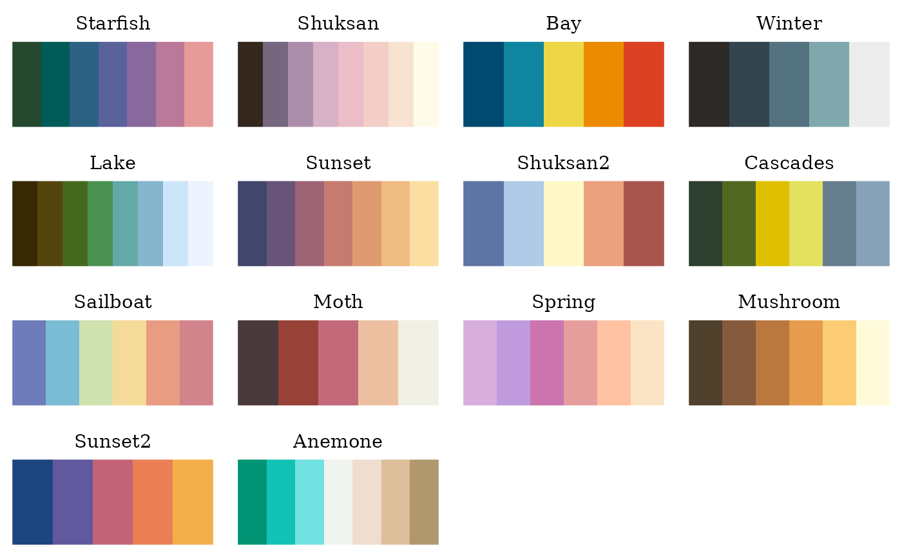

Palettes inspired by Jake Lawlor's photos of the dreamiest, most colourful,
PNW-iest places in Washington State.
pnw_palettes
An object of class palettes_palette with 14 colour
palettes. Use names(pnw_palettes) to return all palette names.
Examples
# Get all palettes by name.
names(pnw_palettes)
#> [1] "Starfish" "Shuksan" "Bay" "Winter" "Lake" "Sunset"
#> [7] "Shuksan2" "Cascades" "Sailboat" "Moth" "Spring" "Mushroom"
#> [13] "Sunset2" "Anemone"
# Plot all palettes.
plot(pnw_palettes)
